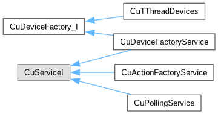
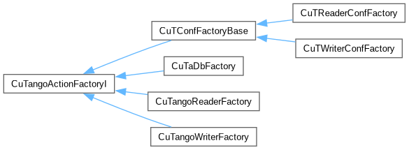

cumbia-tango
1.x
C++ multi threaded library based on cumbia and the Tango control system
Class Hierarchy
Go to the textual class hierarchy


Generated on Wed Oct 31 2018 16:05:57 for cumbia-tango by
1.8.14


 1.8.14
1.8.14